Photography
-The story I failed to put into words
Travel
Nature
Architecture
Wildlife
About
welcome to our website . we are posting here our nature , wildlife and our travel stories . we are also providing here the option to upload your own photographs in "Post now" button on our home page . we are here to inspire young photographers with our gallery and happy to collaborate with you guys. please click on "join us" button, we'll be happy to have you with us.
Contact Us
Udisha- 91493-47533
Priyanshu-78766-59847
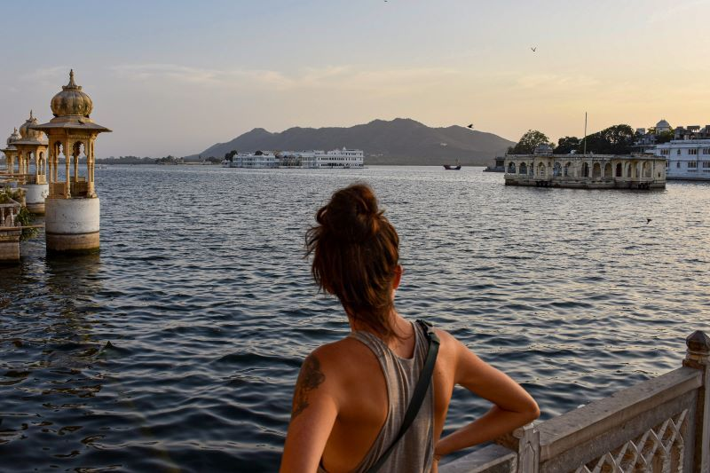
My love of traveling standby and living in the exhilaration of the moment backfired, and I had to backtrack from the magnificent banks of the Ganges in the holy city of Haridwar, back down to Delhi to try and find a new route out of India. Arriving into Delhi in the afternoon, I scrambled around to find a bite to eat before sundown. I found a small restaurant near my hostel, but after a few bites of putrid, rotten flavored chicken I had a bad feeling and left, meal unfinished, to try get an early night. But it was already too late. All it took was a few bites. The next morning I was up early and headed to the bus stop before sunrise, thankful to have found a last-minute ticket on a long distance bus to Kathmandu. The dirty, rickety old bus left from a dusty underpass — not a bus stop or station in site. It was full of upright seats with nowhere to recline and rest for the massive 26-hour journey ahead. I was eight hours into a long windy journey through lush jungle when the food poisoning took hold. Without warning, I began violently vomiting — mostly into a bag I had, but also all over myself and my seat.
“I remember seeing it and being inspired by not just its size, but what somebody told me: that most of the erosion was not the water, it was the wind,” Crow said. “Even as a kid I was like, ‘How is that possible? How can the wind do that?’ And I had no concept of time and what the wind could do over millions and millions of years, or water and the wind. I just remember being awe-inspired by the thing.” The family got back in the car and went to the Painted Desert, where Crow got in a fight with his brother, dirtied his clothes and had to spend the rest of the trip in his underwear. His subsequent Grand Canyon adventures have been no less memorable. He has hiked down to the river and back in a day seven times, and he has done two rim-to-rim hikes. One of those two rim-to-rims was a contest hosted by former Arizona Regent Greg Patterson. Two months before the hike, Patterson ran into Crow. “You don’t look like you’re training,” he said. “You look fat.” “I’m training,” Crow said, tapping his temple. “Right here.” “Well, I hope that works out well for you,” said Patterson.”
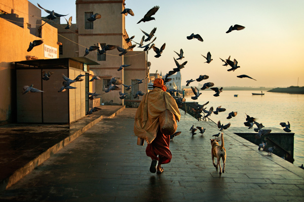
‘Kadam to rakho Kashi mein, tar jaoge Kashi mein.’ (You are sure to attain salvation once you’ve visited Kashi). A place which deifies death as much as it celebrates life. Mythology has it that the funeral pyres at the famous cremation grounds of Manikarnika and Harishchandra Ghat never cool down. As the flames from the funeral pyres lick the air with a feinted romanticism, there are always scores of people silently witnessing the entire process. Varanasi is perhaps the only city where people wish to die, as it gives them a chance to attain salvation without any qualms. Kashi Mumukshu Bhawan is a hostel which caters to the needs of the dying, and it is believed that those who lodge themselves at this place are sure to break free from the bondages of life within a very short time.
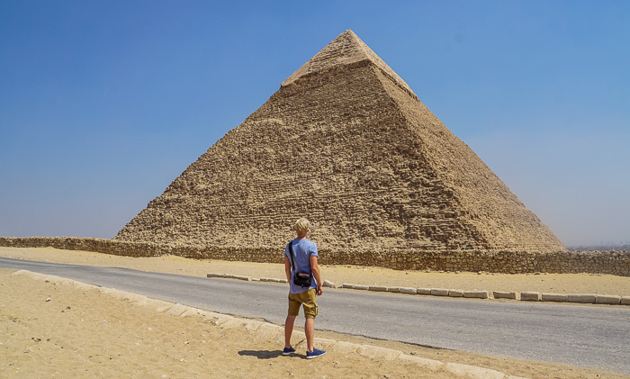
It is widely known among those with even a passing interest in Egyptian antiquities that preparing for the afterlife was something actively pursued by at least the ancient royalty, specifically the pharaohs, or kings of Egypt. Embalming was a highly developed practice, the goal to preserve the deceased body so that it could venture into the afterlife in the same glory and comfort that the deceased had enjoyed in his or her corporeal existence on earth. The ancient Egyptians did not have our modern formaldehydes or other chemicals to preserve the dead body, so they used a process that involved thoroughly desiccating, or drying the body after removing the organs such as the kidneys, liver, intestines, lungs, brain and, most importantly, the heart. After drying and wrapping these organs, they were either placed back inside the body cavity, or were stored in special jars to be buried along with the body. The dried and preserved heart, however, was always returned to the body, since it was considered to be the seat of the thought and soul of the deceased. In the meantime, while the organs were being treated and preserved, the body itself was being similarly desiccated, then preserved by being bathed in oils, spices, and a powder called natron. Finally it was wrapped in linen to become what we call a “mummy.”
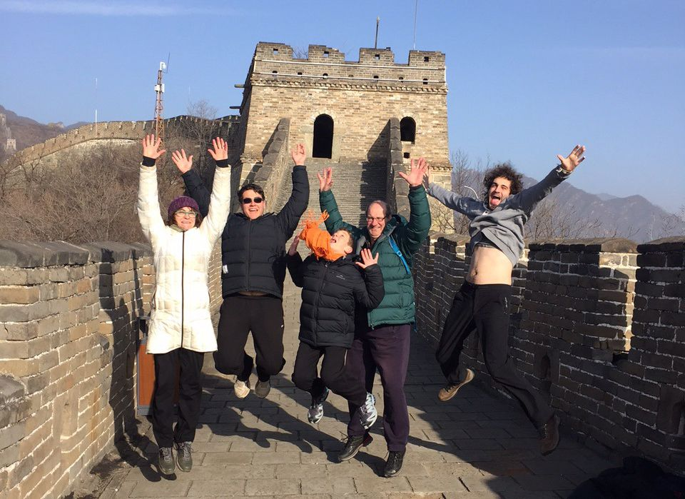
Ni Hao! Welcome to the journey I took in China. By far, it's one of the most beautiful landscapes I have ever seen. Let's start this journey where all journeys start...at the beginning. So grab your China map and let's get moving. I arrived to the Beijing International Airport late at night only to be greeted by one of the BEST guides. Her name is Jessie. Jessie's hometown in nestled in Southern China in the province of Guangxi. She, and Mr. Chao *our driver" took me to my hotel-the Bamboo Garden Hotel. Here's the basic scoop on hotels in Beijing, the best ones are either in the Hutong Province OR close to the Forbidden City. I stayed in the Bamboo Garden Hotel in the Hutong Province of Beijing. A total gem. The hotel was once owned by a prince and is now owned by the government. Most homes in the Hutong Province are characterized by the size of their courtyard. In old days, the wealth and status of a family was noted by the size and privacy of its courtyard. The Bamboo Garden Hotel boasts a large courtyard surrounding by traditional Chinese architecture rooms. Stay there if you can, it's lovely. My second day was all about the Great Wall of China, that and food (but we'll get to the food later). The Great Wall of China extends from the far East of Inner Mongolia to Liaoning Province on the coast of Eastern China.
Falling in love with the desert One day, a local took me on a motorcycle ride through town, which spreads out in the shadow of the fort. Around every turn we encountered streets filled with museum-quality havelis and shops filled with local, hand-made crafts, textiles and jewelry. The women of Rajasthan look like a vision of Scheherazade – they wear the brightest colours and most elaborate jewelry in all of India and, so there are lots of gorgeous items to choose from. Then we rode out into the desert, to a tiny Hindu temple dedicated to the elephant-headed deity Ganesh. While there, I was suddenly and inexplicably overcome by a powerful feeling of tension-melting, life-altering bliss. In that moment, it was like my heart burst open, and seeing with my heart, I fell in love with the burnished beauty of the desert. I felt profound peace – and yet more alive than I had ever felt before. I was still feeling the joy of that experience when I went on my first-ever overnight desert safari. About 10 guests from Fifu Guest House traveled by jeep to see Bada Bagh, the royal cenotaphs and a delicate Jain temple complex at Amar Sagar on our way to the Sam Sand Dunes outside of Jaisalmer.
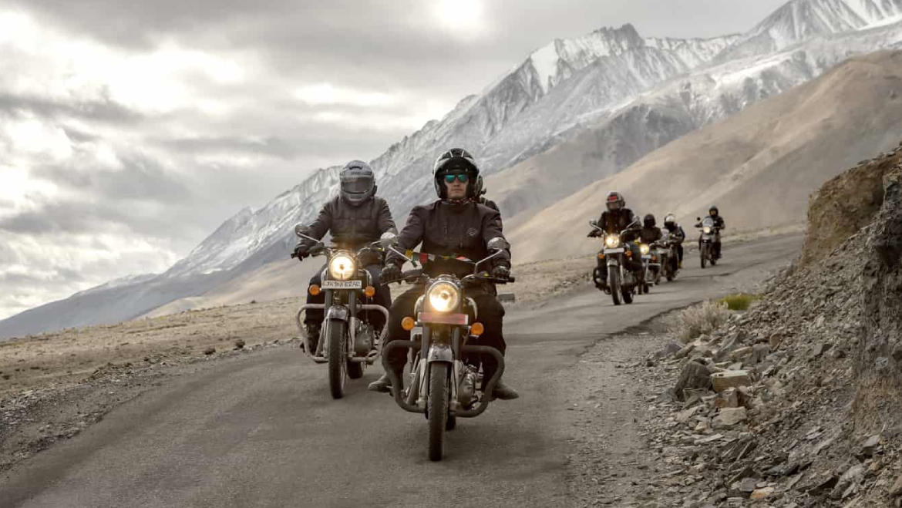
More Than Just A Road Trip to Ladakh; Thinking Sustainably Last August, I took a ride through Leh Ladakh on a bike trip, constantly on the move, where the landscapes stood in sharp contrast to the settled, urbane and sophisticated metropolitan culture of India cities. Unhurried, sparsely populated and the beauty of nothingness; it is times like this where you wonder how do people make a living in a place like Ladakh. The world is divided into two extremes: those who believe in the incredible, and one of the improbable where places like Ladakh no matter how beautiful, can feel despairing as I saw a deathbed of trash in the most scenic locales. I had questions, instant regret on being here and at the same time pure awe, admiration and respect for people who lived on the fringes of these barren plains as well while riding through this terrain.
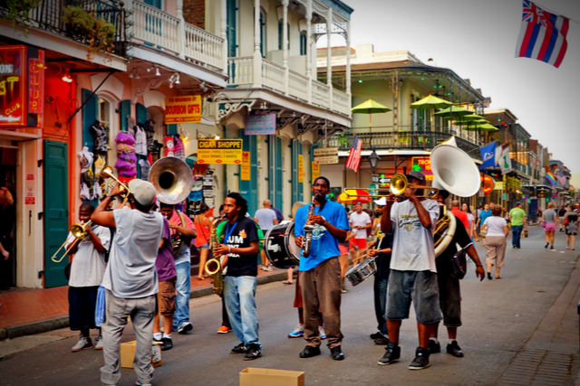
My flight was three and a half hours delayed. It’s my first time coming here and I wanted to travel on Fourth of July and just experience a different area and make memories.” Some started the party at the airport and sipped wine while waiting for their bags. Our camera found Rhonda Smith on Bourbon Street almost immediately after she left the airport. Matthews said, “God Bless the USA. Also, my husband just finished 6 months of chemo and our 15 year wedding anniversary is Sunday, July 4. What better place to be than Bourbon Street?” According to AAA, this weekend, more than 47-million Americans are expected to travel and the majority are driving. Amy Chance and her family made the drive to New Orleans from Oklahoma. “We are just here for the night, and then we are heading to Panama City tomorrow,” Chance said. Whether you’re driving or flying this weekend, make sure to give yourself extra time to make it to your destination.
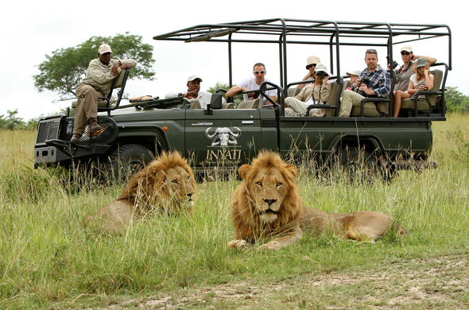
Tales of Lions I don’t know about you, but the lion is my favourite animal. As far back as I can remember, I have always loved these magnificent beasts. Funny, seeing as I am not even remotely a cat person. But there is just something about a lion that I can’t get enough of. I spent a lot of my childhood in the Kruger National Park, so I have seen more than my fair share of these stunning animals. I have not, however, had experiences that come even close to some of those mentioned in this book. There are stories of people getting out of their cars to get a closer look at a lion and there are the startling photos of a lioness trying her best to open a car door with her mouth. Lions are always going to be an exciting animal to see.
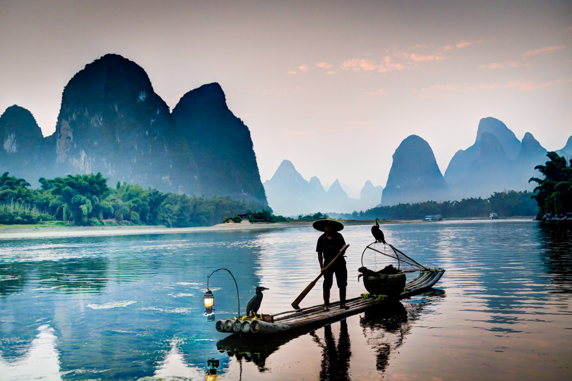
Dial back to the golden days of 007 and you will find yourself on a limestone beach with emerald green waters. It’s the very Island that once James Bond walked upon. The beach has since inherited the name of the Bond. It has now become one of the most famous landmarks in Phang Nga Bay. Though it shot to claim and found its place on the international tourist map after the James Bond gig. It was, indeed, the star in the James Bond movie, ‘The Man with the Golden Gun’. Behold the treasures of scenery here, look at the lime-stone cliffs, sizzling, vertically aligned by the emerald green waters. This landmark Island, located at the Phang Nga Bay, falls under a national park, hence you need to get your entry pass before you enter the premises.
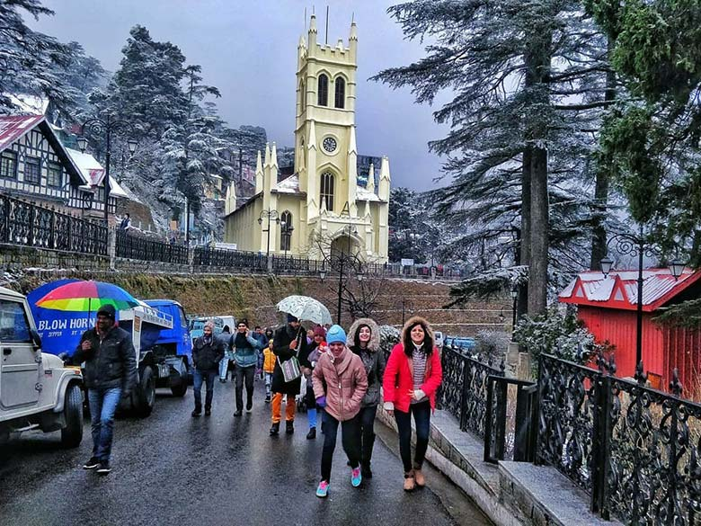
"The Queen of Hills"
We plan a family vacation every year. This year, we planned to visit the famous hill resort, Shimla. Shimla is one of the attractive tourist spots in India. One of our family friends suggested us to visit Shimla since they enjoyed the place very much. We planned a trip and stayed in Shimla for a week. The accommodation was simply awesome and we started for trekking after a short nap. We enjoyed Chadwick Falls, Jakhoo Temple, Dhanu Devta Temple and Tara Devi Temple. We visited the Famous Gaiety Theatre; the Architecture of many buildings in Shimla is simply overwhelming. The best part of the vacation is the Yak Ride at Kufri, a place 16 km from Shimla.
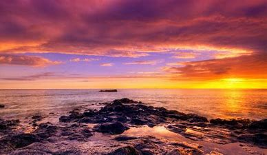
Sunset
A cool, crisp breeze ran through my hair, I pulled my warm blanket higher on my chest and breathed deeply. Looking out from the back porch of the main house, descending down a small grassy hill, and three large rock stair steps downward lay the stone beach. There, the cold lake water flowed and glided over the multicolored rocks of the shore. I let my eye wander forward onto the great expanse of lake that spread out before me. Deep blue water that sparkled a brilliantly bright sapphire in the reflection of the setting sun, I memorized its flowing colors, fabricating a painting of it in my head. I tucked my feet underneath me and snuggled deeper into the cushy lounge chair, then I slowly closed my eyes, and allowed myself to be lulled to sleep, by the mesmerizing melody of the sapphire waves.
-Share your creativity-
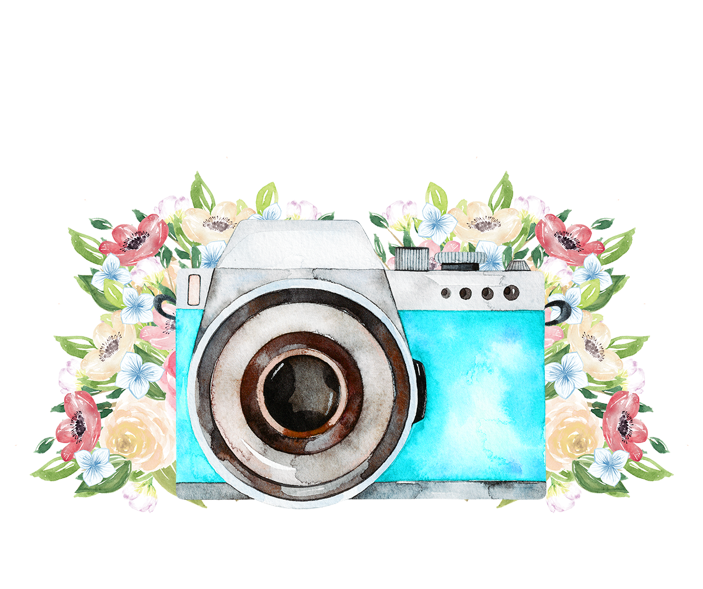
Boost your Passion to a new Level
Post Now
Join Us
Name
email
feedback
Country
AURORA
FOOD
HIMALAYAS
INDIA
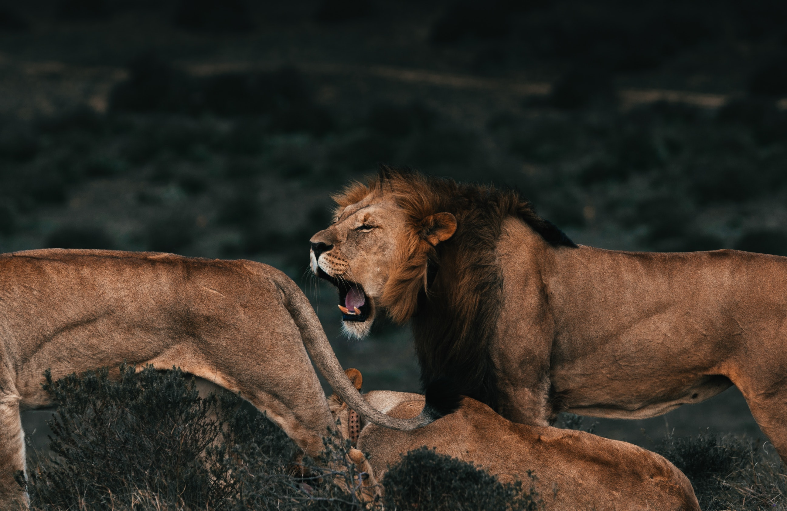
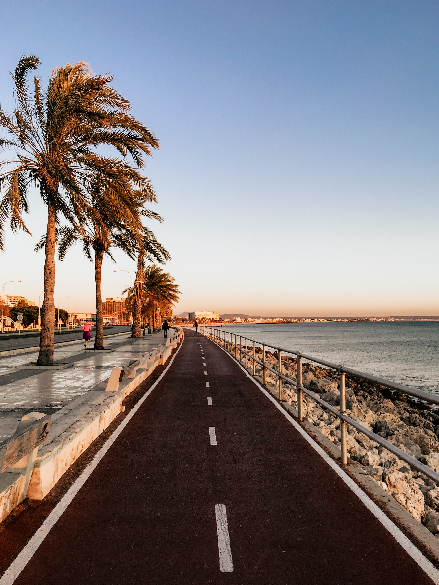 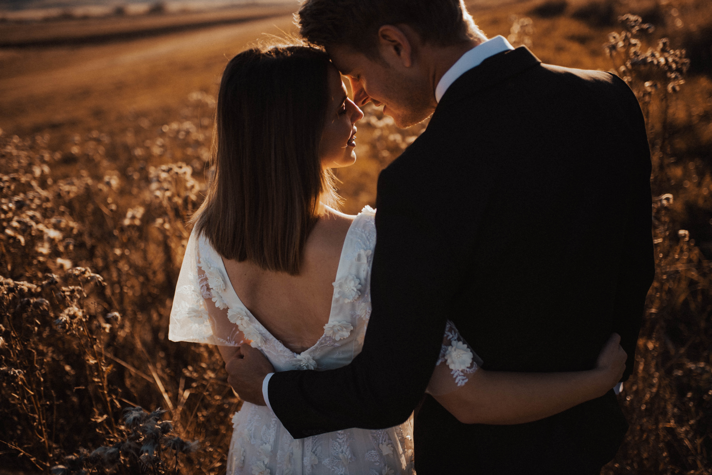